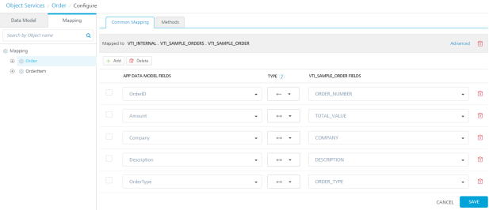

Overview
User Guide: Object Services > Configuring Common Mapping to the Fields on the Back End
Mapping Operations to Back-end Methods
The preferred data model is rarely in the same format or representation as the back-end data from the systems of record. The condition requires a robust mapping capability that can easily retrieve, filter, and transform the back end into the preferred representation. For example, the preferred view of the customer entity may comprise of a contact object from SAP and additional profile information from the enterprise service bus (ESB).
The following sections detail about common mapping, methods (verbs) mapping, custom verbs, and mapper elements:
- Mapping Verbs and Methods to the Fields on the Back End
- Creating a Mapping by using Visual Mapper
- Enhancing the Mapping by using XML Mapper for advanced scenarios
- Mapper Elements
- Identity Support in Mapper
Mapping Verbs and Methods to the Fields on the Back End
Configuring Common Mapping to the Fields on the Back End
The common mapping that you define between a data model field and a back-end object field is applied to a transform request, response, or both. Volt MX Foundry applies this mapping when it invokes any method on the back-end system.
The common mapping contains three types of mapping icons:
- A double-headed arrow icon in the indicates both request and response mapping.
- The right arrow icon indicates only request mapping.
- The left arrow icon indicates only response mapping.
To configure the common mapping, follow these steps:
-
In the navigation pane, click the Mapping tab.
The mapping configuration screen for the Order object appears.
-
Click in the first Map to field. A drop-down menu appears. Select VTI_Internal. The business object in the back end.
-
Click in the second Map to field. A drop-down menu appears. Click on the plus button next to VTI_SAMPLE_ORDERS, and then click on VTI_SAMPLE_ORDER.
The Common Mapping tab shows that the Order object in your data model is mapped to the VTI_SAMPLE_ORDER table of the VTI_SAMPLE_ORDERS database in the back-end object VTI_Internal.
-
Click the Add button.
- Click in the first field under APP DATA MODEL FIELDS. A drop-down menu appears. Select OrderID.
- Click in the first field under VTI_SAMPLE_ORDERS FIELDS. A drop-down menu appears. Select ORDER_NUMBER.
- Click the Add button.
- Click in the second field under APP DATA MODEL FIELDS. A drop-down menu appears. Select Amount.
- Click in the second field under VTI_SAMPLE_ORDERS FIELDS. A drop-down menu appears. Select TOTAL_VALUE.
- Click the Add button.
- Click in the third field under APP DATA MODEL FIELDS. A drop-down menu appears. Select Company.
- Click in the third field under VTI_SAMPLE_ORDERS FIELDS. A drop-down menu appears. Select COMPANY.
- Click the Add button.
- Click in the fourth field under APP DATA MODEL FIELDS. A drop-down menu appears. Select Description.
- Click in the fourth field under VTI_SAMPLE_ORDERS FIELDS. A drop-down menu appears. Select DESCRIPTION.
- Click the Add button.
- Click in the fifth field under APP DATA MODEL FIELDS. A drop-down menu appears. Select OrderType.
-
Click in the fifth field under VTI_SAMPLE_ORDERS FIELDS. A drop-down menu appears. Select ORDER_TYPE.

-
Under TYPE, click in the drop-down menu for OrderID and ORDER_NUMBER. Select the left-arrow to indicate response mapping of the object field.
Note: You can sort fields by clicking the column name header in the Mapping tab.
You can also map an object in your data model to additional child objects in the backend object hierarchy. To map an object to additional child objects in the backend, click Advanced, and then select the child objects in the hierarchy.

Configuring Methods Mapping to Fields on the Back End
Methods mapping is where you can configure what the system should do for all the methods the client app will use. For example, a work order will use the Get, Post (create), Put (update), and Delete methods. When you perform Get on a work order object, the mapping specifies the target object in the SAP back end and the method that you can use against that object. You can control the mapping for both the request to SAP and the response.
To configure the methods mapping, follow these steps:
- In the mapping screen, click the Methods tab.
- Click the Add button.
- Click in the Data Model Verb field, and then select Get from the drop-down menu.
-
Use the default Verb Security Level, Authenticated App User.
The Verb Security Level specifies how the client must authenticate to the verb. You can restrict access to this verb to only authenticated app users that have successfully authenticated using an Identity service. An anonymous app user verb allows access from a trusted client that has the required App Key and App Secret, but the client does not need to authenticate the user through an identity service. Set the security level to Public to allow any client to access this verb without any authentication requirement.
-
Click in the Backend Object Verb field. Click the plus button next to VTI_SAMPLE_ORDER, and then select Get.

Note: Â For Integration services, Object Services provides built-in variants of the get verb. Click the get verb in the navigation page to configure the mapping of the variants of the get verb. The built-in variants of the get verb are getAll, getbypk, getupdated, getbatch, and getdeleted. These get verbs do not have an individual mapping. They have a common request mapping and a common response mapping.
-
Click Add Mapping.
The method mapping configure screen appears.
The Security Filters, OData Query Options, Request Mapping, Response Mapping, and Test tabs are displayed.
The OData Query Parameters tab lists the parameters of the method that you can use for the VTI_SAMPLE_ORDER object.
-
Click the Request Mapping tab, and then click Edit button under Mapper area.
The common mapping of the object is applied to the verb by default.
-
To override the common mapping, click Clear Mappings, and specify a custom mapping in Request Mapping and Response Mapping.
Note: If you want to override a custom mapping with common mapping, click Apply Common Mapping.
-
In OData Query Options, do the following:
-
Click in the Value field for the $filter parameter.
Note: Â The
&and=operators are not supported in values for OData string key ($filter). -
Enter the expression orderStatus ne 'Draft'. This will filter the orders that have an order status of Draft.
-
-
Click Request Mapping.
If you do not apply common mapping of the object to the get verb, this is where you specify a custom mapping on the request to SAP. Common mapping by default maps one-to-one the data model method to the method of the target object in the back end.

- Click Response Mapping.
If you do not apply common mapping of the object to the get verb, this is where you specify a custom mapping on the response to SAP.
- Click Test.
The Test panel appears. You can use the Test panel to test the mapping for a method. To test the mapping, enter the query parameters, select an environment, enter the headers and header values that you want to include with the test. Then, in Request Payload, enter values for the fields for which you want to test the mapping, and then click Send.

- In the navigation pane, click the Orders object.
-
For the Get verb, click Advanced.
-
The Include Related Objects field and the Verb Security Level field appear. The Include Related Objects setting specifies which part of the data model Object's hierarchy can be handled by the verb. This information helps in optimizing the number of calls to the back end in case the verb also deals with other objects in the hierarchy. You can multi-select multiple objects in the drop-down to specify the information.

-
Custom Code Invocation section appears. Configure the parameters for the preprocessor and postprocessor to filter the request and response objects for your business requirements. You can specify multiple preprocessors and postprocessors. This is supported for integration/Orchestration services and Object services.
Important: To invoke preprocessor and postprocessor, you must import a valid JAR file while creating an object service. The corresponding jars have to be uploaded to the Volt MX Foundry console under the Advanced tab in the object service definition service definition.
-
Java Preprocessor and Postprocessor - The preprocessor and postprocessor are Java classes that implement ObjectServicePreProcessor and ObjectServicePostProcessor interfaces. A developer can write custom code in the execute method of the preprocessor or postprocessor class.
* Under the **Custom Code Invocation**, follow these steps: 1. Under **Preprocessor**, configure the following: * For **Java**, you can configure multiple Preprocessors. This is supported for Integration/Orchestration services and Object services. If you have defined your logic for multiple preprocessors in the uploaded JAR file in the service definition, you can then select the available one or other preprocessors. You can arrange the selected pre-processors to be executed in the desired order during the operation call. <details close markdown="block"><summary>Use Case </summary> When customers have a large amount of custom code, the maintainability of the code becomes an issue. The issue becomes much more complicated when multiple stakeholders working on custom code. In such cases, the custom code can be split into multiple pre/post processors so that stakeholders can work on their respective modules. This increases the upgradability and maintainability of the custom code. </details> Select **Java**, and from the **Class** list, select a preprocessor class. You can select one or more classes. This step enables a developer to include any business logic on the data before sending the response to a mobile device. 2. Â Â Â Â Under **Postprocessor**, configure the following: * For **Java**, you can configure multiple Postprocessors. This is supported for Integration/Orchestration services and Object services. If you have defined your logic for multiple postprocessors in the uploaded JAR file in the service definition, you can select the available one or other post-processors. You can arrange the selected post-processors to be executed in the desired order during the operation call. <details close markdown="block"><summary>Use Case </summary> When customers have a large amount of custom code, the maintainability of the code becomes an issue. The issue becomes much more complicated when multiple stakeholders working on custom code. In such cases, the custom code can be split into multiple pre/post processors so that stakeholders can work on their respective modules. This increases the upgradability and maintainability of the custom code. </details> Select **Java**, and from the **Class** list, select a postprocessor class. You can select one or more classes. This step enables a developer to include any business logic on the data before sending the response to a mobile device.You can rearrange the order of the classes to be executed, if required. * Preprocessor and Postprocessor interfaces in Object services **ObjectServicePreProcessor** Implement this interface and write your custom preprocessor logic by overriding execute method. You are provided with _FoundryRequestManager_, _FoundryResponseManager_ and _FoundryRequestChain_ as method arguments. <figure class="highlight"><pre><code class="language-voltmx" data-lang="voltmx">{ public interface ObjectServicePreProcessor { void execute(FoundryRequestManager foundryRequestManager, FoundryResponseManager foundryResponseManager, FoundryRequestChain foundryRequestChain) throws Exception; } }</code></pre></figure> **Method arguments: _FoundryRequestManager_ :**Â This argument specifies the different types of handlers to operate on request related information.** **_FoundryResponseManager_ :**Â This argument specifies the different types of handlers to operate on response related information. **_FoundryRequestChain_ :** This argument specifies a chain similar to servlet _FilterChain_ used to control the request flow.** For a sample Java class code for ObjectServicePreProcessor, refer to [Java Sample Code for Preprocessor - Object services](../Java_Pre-Post_Samples_Objects.md#sample-objectservicepreprocessor). **ObjectServicePostProcessor** Implement this interface and write your custom postprocessor logic by overriding execute method. You are provided with _FoundryRequestManager and_ _FoundryResponseManager_ as method arguments. <figure class="highlight"><pre><code class="language-voltmx" data-lang="voltmx">{ public interface ObjectServicePostProcessor { void execute(FoundryRequestManager foundryRequestManager, FoundryResponseManager foundryResponseManager)throws Exception; } }</code></pre></figure> **Method arguments: _FoundryRequestManager_ :**Â This argument specifies the different types of handlers to operate on request related information.** **_FoundryResponseManager_ :** This argument specifies the different types of handlers to operate on response related information.** For a sample Java class code for ObjectServicePostProcessor, refer to [Java Sample Code for Preprocessor - Object services](../Java_Pre-Post_Samples_Objects.md#sample-objectservicepostprocessor). > **_Important:_** **Limitations of custom code invocation in Object services are as follows: **\- Â Custom code is not invoked when Bulk Sync V2 APIs are in use.\- Â Custom code is not invoked when orchestration services which make use of Object services are in use.\- Â Custom code is not invoked when we use Volt MX Foundry console test API. > **_Note:_** **For Volt MX Cloud / For on-premises:** Runtime jars to write custom code can be downloaded from Admin console. In the **Downloads** section, you can download the middleware jars as a zip file. Here the `middleware-api.jar` will have all the classes related to custom code. > **_Note:_** For details on middleware APIs for preprocessor and postprocessor, contact refer to [Volt MX App Services API](../../../../../../java_docs_apis/MiddlewareAPI/index.html) -
Click Save.
You can enable the application for offline synchronization, publish the application, and then provide the code that Volt MX Foundry generates to a mobile application developer.
How to Use Actions in Existing Objects Methods
You can perform the following actions on a method in existing object services:
-
Edit: Allows you to edit a method. After you edit a method, you have to republish all the apps that are using the service to apply the changes.
Note: To know more about publishing an app, refer to Publish an app.
Note: If a service is part of a published app, you can rename that service only after the app is unpublished.
-
Sample Code: A dynamic code is generated based on the configuration of a method. You can use this code in your SDK.
-
Delete: Allows you to delete a method.
Note: If a service is a part of a published app, you can delete that service only after you unlink the service from all the published app.
Adding Custom Verbs for SAP Object Service
SAP Object Service provides you the ability to add custom verb names and map it to an operation of a back-end object. You can now create your own custom verb in addition to the existing verbs (Create, Read, Update, Delete, and Partial Update) and map to a back-end business operation.
*To create a custom verb,* follow these steps:
- In the Mapping screen. click the Methods tab.
-
Click the Add button.

-
Click in the Data Model Verb field. A drop-down menu appears. Select custom.
- Provide the Custom Verb name.
-
Use the default Verb Security Level, Authenticated App User.

-
Select the Library, it automatically populates the list of data and business object hierarchies available.
- Select the Business Object from the drop-down list.
-
Select the verb name from the Verb drop-down list and click SAVE.
The created custom verb is successfully added to the list of existing verbs.
-
Select the created custom verb from the Mapping section in the left pane.
-
Click Request Mapping.
The verb has the Common Mappings applied by default. You can click on **Clear Mappings** and specify a custom mapping on the request to SAP to map the backend object to application model object. The custom verb will be available to the end users like the other verbs in the application. The rest client can test the custom verb from the published application. -
Click Response Mapping.
If you do not apply common mapping of the object, you should specify a custom mapping on the response to SAP. > **_Note:_** In Foundry V9 and later, any V8 custom response format is ignored and the internal response formatting is enabled (only Primary Key is returned). To get the V8 functionality, you need to set the following -D parameter on the JVM : `VOLTMX_SERVER_CUSTOM_VERB_RESPONSE_FORMAT_ENABLED` to `false`. For a workflow object, internal response formatting is enabled by default. Before migrating to V9, any existing services or orchestrations that depend on a custom response format will need to be adjusted to use the standard response format. -
Click Test.
You can use the Test panel to test the mapping for a method. To test the mapping, enter the query parameters, select an environment, enter the headers and header values that you want to include with the test. Then, in Request Payload, enter the values for the fields for which you want to test the mapping, and then click **Send**. If the test is successful, the end users can invoke the created custom verb from their application post publish. 
Mapping verbs for Objects (for Service-driven Objects)
To map the verbs for the Defect object, follow these steps:
- In the navigation pane, click the Mapping tab, and then click the object. For example, Defect.
-
Click the Add button.
The verb mapping configuration screen for the Account object appears.
-
Click in the Data Model Verb field. A drop-down menu appears. Click Create.
-
Under Verb Security Level, use the default, Authenticated App User.
The Verb Security Level specifies how the client must authenticate to the create verb. Authenticate App User restricts access to the create verb to users that have successfully authenticated using an Identity service. You can also set the security level to Anonymous App User and Public.
-
Click in the Services field. A drop-down menu appears. Select the Digite integration service.
- Click in the Operations field. A drop-down menu appears. Click createAccount.
- Click Save.
- Repeat steps 2 through 7, and map the data model verb update to the updateDefect operation.
- Repeat steps 2 through 7, and map the data model verb partialupdate to the updateDefect operation.
-
Repeat steps 2 through 7, and map the data model verb get to the getAllDefects operation.
The mapping for the verbs is automatically generated. Mapping is auto-generated only when the dataset name of integration services and object name matches. The mapping is populated in the Request Mapping and Response Mapping tabs based on the input and output of the operations. You can click the **Clear Mappings** button to clear the existing mapping and then specify the custom mapping.  You can view the mapping for a verb by clicking the verb on the Mapping tab in the navigation pane. Request mapping is the parameters that are mapped from the device side to the back end. Response mapping is the parameters that the backend sends to the object's fields. -
In the navigation pane, under the Defect object, click the get verb.
-
Click Get Variants.
The mapping configuration for the get verb appears. Object Services provides built-in variants of the get verb. You can click **Get Variants** button to view the variants for methods. The built-in variants of the get verb are getAll, getbypk, getupdated, getbatch, and getdeleted. These get verbs do not have individual mapping. They have a common request mapping and a common response mapping. -
Click in the Service Name field for the getbypk verb, and select Digite.
-
Click in the Operation field for the getbypk verb, and select getDefectDetailsById.
A green check mark indicates that the operation mapping has succeeded.  -
Click Save.
> **_Note:_** For more information on how to configure Get Variants for SDO, refer to [Configuring SDO Get Verb for Offline Objects](SDO_Get_VariantsObjectservices_Stage3.md).
Support for SDO Services from Offline Objects
To support SDO services from Offline Objects, you must configure the multiple variants of a get verb from the integration services.
The three types of get variants that support SDO services from Offline Objects are:
- getUpdated â Retrieves the initial records updated within the last updated time stamp.
- getByPK â Retrieves the records based on the ID. This variant supports the records based on a primary key ID.
- getBatch â Retrieves the records of a batch when a batch pointer is provided.
To configure SDO services in Object Service, follow these steps:
- Create a service driven object service from the integration service.
-
Go to Configure Services > Objects, select the corresponding SDO object service and click Mapping, and click Get Mapping.
You can find the Get verb is mapped to a single Integration service.

-
Expand Get Variants.
-
Map each get variant getByPK, getUpdated, and getBatch with the corresponding integration service.
All the Get variants share the same mapper. So, all the parameters of the get variants must be defined with the corresponding Integration service.
The get variants getByPK, getUpdated and getBAtch for Offline Objects must return the following mandatory output parameters:
- hasMoreRecords â Indicates if there are more records to be downloaded.
- batchID â If batching is applicable, the batchID value must be displayed. If batching is not supported, the parameter does not exist in the output params.
In addition to the built-in verb options, you can also create custom verbs for an object. For example, you can create the custom verb assign, and map it to the assignDefect operation on the back end.
Testing an Object Service in Volt MX Foundry
After you publish the service, you can test the service from Volt MX Foundry. You can only test the published state of the service. You can test the changes you make in the service designer only if you publish the app again.
To test a published service, follow these steps:
- In the Mapping tab for a Salesforce service, click a verb (for example, get).
- In the Configure screen, click the Test tab.
-
In the Test tab, select the environment and click Send.
The result dialog displays the Response and Log tabs:
-
Response tab displays the final response of the service.

-
Log tab displays the following details
-
Request displays the request data such as Service ID, App ID and so on.
-
Request Mapper Input displays the mapper input in the request flow.
-
Request Mapper Output displays the output of mapper in request flow.
-
Backend Request displays the data sent to the backend.
-
Backend Response displays the response received from the backend.
-
Response Mapper Input displays the input to mapper in response flow.
-
Response Mapper Output displays the output of mapper in response flow.
-
Response displays the final output of service and the status showing success or failure of test call.
-
-
Limitations for testing an Object Service
- Testing of Pre-Processor and PostProcessor is not supported.
-
Testing of Storage Objects is not supported without publishing.
-
You can now Creating a Mapping by using Visual Mapper